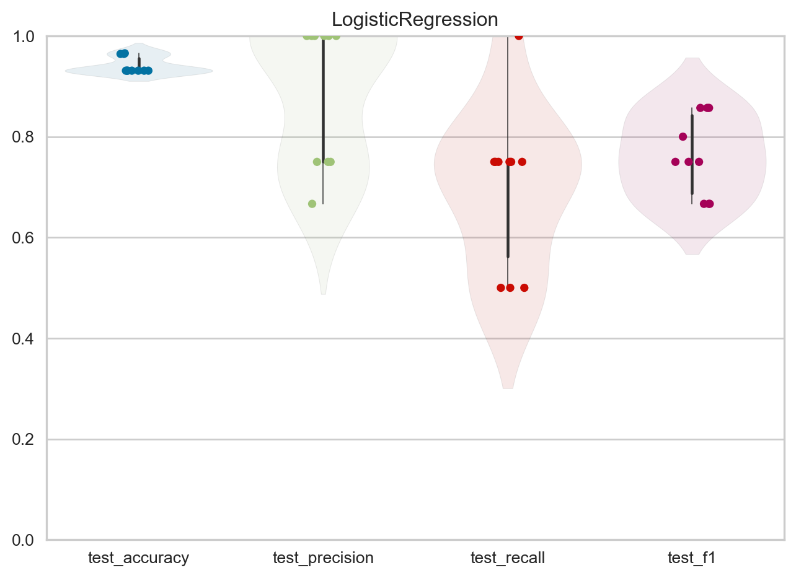
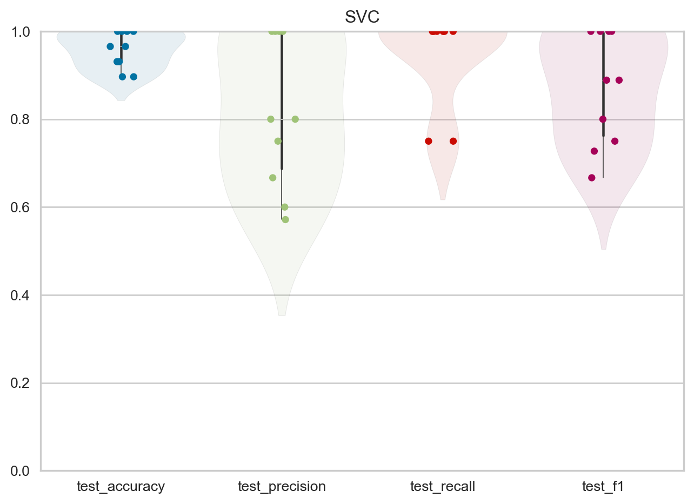

# Data Wrangling
import numpy as np
import pandas as pd
# Data Visualization
import seaborn as sns
import matplotlib.pyplot as plt
# Dataset Splitting
from sklearn.model_selection import train_test_split, cross_validate
# Feature Engineering Classes
from sklearn.compose import ColumnTransformer
from sklearn.pipeline import Pipeline
from sklearn.preprocessing import StandardScaler, MinMaxScaler
# Machine Learning Model Classes
from sklearn.neighbors import KNeighborsClassifier
from sklearn.linear_model import LogisticRegression
from sklearn.naive_bayes import GaussianNB
from sklearn.svm import SVC
from sklearn.tree import DecisionTreeClassifier
# Classification Metrics
from sklearn.metrics import classification_report
# Classification Visualization
from yellowbrick.classifier import ConfusionMatrix, ClassificationReport, ROCAUC
# Base Classes
from sklearn.base import ClassifierMixin6 Modelling
In the previous section on Data Wrangling, it was discovered that the 6 machine parameters to be studied had discrete values with three levels each, and the target variable was a highly imbalanced binary variable.
In this section, we will feed the dataset into different machine learning models to find the optimal model that can help us understand the relationship between the input and output variables. To do this, we will split the dataset into a training set and a testing set, with a test size of 20%. The training set will be used for model training and cross-validation, while the testing set will be used to evaluate the model’s performance on unseen data.
Once the data is split, we will load it into different out-of-the-box machine learning models from the scikit-learn library. At this stage, our goal is to find the optimal model using their default hyperparameters.
Finally, we will compare and evaluate the training and testing performance of each model. The objective is to shortlist the top-performing model.
6.1 Importing Relevant Libraries
The following code contains all the necessary import statements for this section.
6.2 Importing the Dataset
The code below loads the pre-processed dataset from the EDA section into a pandas DataFrame.
dataset_uri = "datasets/V1.csv"
dataset = pd.read_csv(dataset_uri, index_col=0)
dataset.head()| power (W) | welding speed (m/min) | gas flow rate (l/min) | focal position (mm) | angular position (°) | material thickness (mm) | weld number | cross section positon in the weld (mm) | cracking in the weld metal | |
|---|---|---|---|---|---|---|---|---|---|
| 0 | 1050 | 1.0 | 15 | 0 | 0 | 0.6 | 1 | 8 | 0 |
| 1 | 1050 | 1.0 | 15 | 0 | 0 | 0.6 | 1 | 16 | 0 |
| 2 | 1050 | 1.0 | 15 | 0 | 0 | 0.6 | 1 | 24 | 0 |
| 3 | 1050 | 1.0 | 15 | 0 | 0 | 0.6 | 1 | 32 | 0 |
| 4 | 1050 | 1.0 | 15 | 0 | 0 | 0.6 | 2 | 8 | 0 |
6.3 Vertical Data Splitting
Once the dataset is loaded, we will split it into a feature matrix X and a target vector y. X_train and y_train will be soon splitted into X_train & X_cv, and y_train & y_cv during model selection.
X = dataset.iloc[:, :-1].values
y = dataset.iloc[:, -1].values
X_train, X_test, y_train, y_test = train_test_split(
X,
y,
test_size=0.2,
stratify=y,
random_state=22
)6.4 Horizontal Data Splitting
After defining the feature matrix and target vector, we will split them horizontally into a training set and a testing set. The code below performs the horizontal split with a test size of 20%, ensuring that both sets contain the same proportion of 0s and 1s in their target variable.
6.5 Training the Model
The code below will train 5 machine learning models using the preprocessed dataset from the Data Wrangling section.
class ClassifierEvaluator():
def __init__(self, estimators: list[ClassifierMixin]) -> None:
self.estimators = estimators
def cross_validate_metrics(self, X, y) -> None:
scorings = ['accuracy', 'precision', 'recall', 'f1']
for estimator in self.estimators:
name = type(estimator).__name__
pipeline = Pipeline(
steps=[
("std_scaler", StandardScaler()),
("classifier", estimator)
]
)
metrics = pd.DataFrame(cross_validate(pipeline, X, y, cv=10, scoring=scorings))
metrics_viz = sns.stripplot(metrics.iloc[:, 2:]).set(title=name)
metrics_viz = sns.violinplot(metrics.iloc[:, 2:], alpha=0.1).set(title=name)
plt.ylim([0,1.0])
plt.show()
def tabulate_cross_validation_metrics(self, X, y) -> None:
scorings = ['accuracy', 'precision', 'recall', 'f1']
df = pd.DataFrame()
for estimator in self.estimators:
name = type(estimator).__name__
pipeline = Pipeline(
steps=[
("std_scaler", StandardScaler()),
("classifier", estimator)
]
)
metrics = pd.DataFrame(cross_validate(pipeline, X, y, cv=10, scoring=scorings))
metrics["Model"] = name
df = pd.concat([df, metrics])
return dfevaluator = ClassifierEvaluator(
estimators=[
LogisticRegression(),
DecisionTreeClassifier(),
SVC(),
GaussianNB(),
KNeighborsClassifier()
],
)6.6 Baseline Cross-validation Validation Metrics
The following series of plots below shows the strip-plot and violin plot of each of the model’s accuracy, f1, recall, and precision rates measured during 10-fold cross validation on the training set.
evaluator.cross_validate_metrics(X_train, y_train)

UNBAL_results = evaluator.tabulate_cross_validation_metrics(X_train, y_train)6.6.1 Logistic Regression
UNBAL_results[UNBAL_results["Model"] == "LogisticRegression"].describe()| fit_time | score_time | test_accuracy | test_precision | test_recall | test_f1 | |
|---|---|---|---|---|---|---|
| count | 10.000000 | 10.000000 | 10.000000 | 10.000000 | 10.000000 | 10.000000 |
| mean | 0.003309 | 0.005547 | 0.941133 | 0.891667 | 0.700000 | 0.762143 |
| std | 0.000478 | 0.000598 | 0.016264 | 0.141912 | 0.158114 | 0.079090 |
| min | 0.003000 | 0.004971 | 0.931034 | 0.666667 | 0.500000 | 0.666667 |
| 25% | 0.003004 | 0.005000 | 0.931034 | 0.750000 | 0.562500 | 0.687500 |
| 50% | 0.003023 | 0.005495 | 0.931034 | 1.000000 | 0.750000 | 0.750000 |
| 75% | 0.003733 | 0.006003 | 0.955973 | 1.000000 | 0.750000 | 0.842857 |
| max | 0.004026 | 0.006482 | 0.965517 | 1.000000 | 1.000000 | 0.857143 |
6.6.2 Decision Tree Classifier
UNBAL_results[UNBAL_results["Model"] == "DecisionTreeClassifier"].describe()| fit_time | score_time | test_accuracy | test_precision | test_recall | test_f1 | |
|---|---|---|---|---|---|---|
| count | 10.000000 | 10.000000 | 10.000000 | 10.000000 | 10.000000 | 10.000000 |
| mean | 0.001198 | 0.005907 | 0.948276 | 0.833333 | 0.800000 | 0.800476 |
| std | 0.000424 | 0.000878 | 0.052042 | 0.222222 | 0.258199 | 0.220497 |
| min | 0.000967 | 0.004999 | 0.862069 | 0.500000 | 0.250000 | 0.333333 |
| 25% | 0.001000 | 0.005259 | 0.931034 | 0.666667 | 0.750000 | 0.800000 |
| 50% | 0.001002 | 0.005998 | 0.965517 | 1.000000 | 0.875000 | 0.857143 |
| 75% | 0.001003 | 0.006004 | 0.991379 | 1.000000 | 1.000000 | 0.964286 |
| max | 0.002002 | 0.008012 | 1.000000 | 1.000000 | 1.000000 | 1.000000 |
6.6.3 Support Vector Classifier
UNBAL_results[UNBAL_results["Model"] == "SVC"].describe()| fit_time | score_time | test_accuracy | test_precision | test_recall | test_f1 | |
|---|---|---|---|---|---|---|
| count | 10.000000 | 10.000000 | 10.000000 | 10.000000 | 10.000000 | 10.000000 |
| mean | 0.002217 | 0.006185 | 0.958621 | 0.818810 | 0.950000 | 0.872172 |
| std | 0.000404 | 0.000866 | 0.042389 | 0.172879 | 0.105409 | 0.128790 |
| min | 0.001986 | 0.005022 | 0.896552 | 0.571429 | 0.750000 | 0.666667 |
| 25% | 0.002001 | 0.005990 | 0.931034 | 0.687500 | 1.000000 | 0.762500 |
| 50% | 0.002015 | 0.005999 | 0.965517 | 0.800000 | 1.000000 | 0.888889 |
| 75% | 0.002134 | 0.006736 | 1.000000 | 1.000000 | 1.000000 | 1.000000 |
| max | 0.002978 | 0.007806 | 1.000000 | 1.000000 | 1.000000 | 1.000000 |
6.6.4 Gaussian Naive Bayes
UNBAL_results[UNBAL_results["Model"] == "GaussianNB"].describe()| fit_time | score_time | test_accuracy | test_precision | test_recall | test_f1 | |
|---|---|---|---|---|---|---|
| count | 10.000000 | 10.000000 | 10.000000 | 10.000000 | 10.0 | 10.000000 |
| mean | 0.001303 | 0.005530 | 0.739655 | 0.353948 | 1.0 | 0.521053 |
| std | 0.000479 | 0.000497 | 0.054213 | 0.049893 | 0.0 | 0.053877 |
| min | 0.000988 | 0.004991 | 0.655172 | 0.285714 | 1.0 | 0.444444 |
| 25% | 0.001000 | 0.005003 | 0.695813 | 0.314103 | 1.0 | 0.477941 |
| 50% | 0.001012 | 0.005661 | 0.741379 | 0.348485 | 1.0 | 0.516667 |
| 75% | 0.001748 | 0.005994 | 0.778941 | 0.390909 | 1.0 | 0.561905 |
| max | 0.002001 | 0.006000 | 0.827586 | 0.444444 | 1.0 | 0.615385 |
6.6.5 K-Neighbors Classifier
UNBAL_results[UNBAL_results["Model"] == "KNeighborsClassifier"].describe()| fit_time | score_time | test_accuracy | test_precision | test_recall | test_f1 | |
|---|---|---|---|---|---|---|
| count | 10.000000 | 10.000000 | 10.000000 | 10.000000 | 10.000000 | 10.000000 |
| mean | 0.001702 | 0.007617 | 0.955172 | 0.829286 | 0.925000 | 0.861724 |
| std | 0.000484 | 0.000533 | 0.046120 | 0.193911 | 0.120761 | 0.134958 |
| min | 0.001000 | 0.006996 | 0.896552 | 0.571429 | 0.750000 | 0.666667 |
| 25% | 0.001253 | 0.007001 | 0.905172 | 0.637500 | 0.812500 | 0.732955 |
| 50% | 0.002002 | 0.007983 | 0.965517 | 0.900000 | 1.000000 | 0.873016 |
| 75% | 0.002002 | 0.008008 | 1.000000 | 1.000000 | 1.000000 | 1.000000 |
| max | 0.002007 | 0.008172 | 1.000000 | 1.000000 | 1.000000 | 1.000000 |
Based on the analysis of mean and standard deviation, the models that perform well are LogisticRegression, SVC, and KNeighborsClassifier. These models have relatively high mean accuracy, precision, recall, and F1 score, with low variability (standard deviation). On the other hand, DecisionTreeClassifier and GaussianNB have higher variability and lower mean values, indicating poorer performance.
In addition, when comparing the cross validation metrics, it is evident that LogisticRegression, SVC, and KNeighborsClassifier are good models due to their high mean values and low variability.